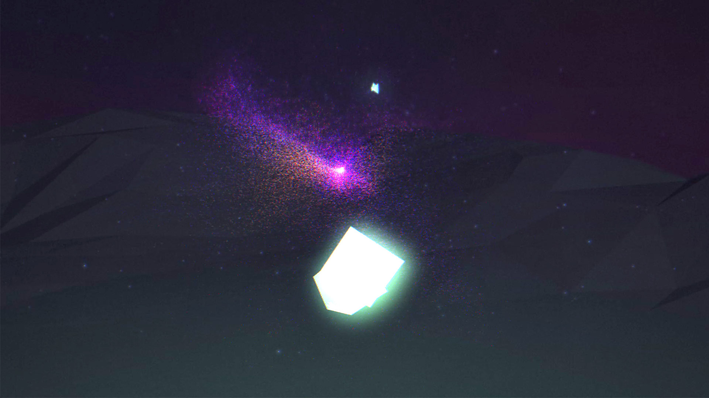
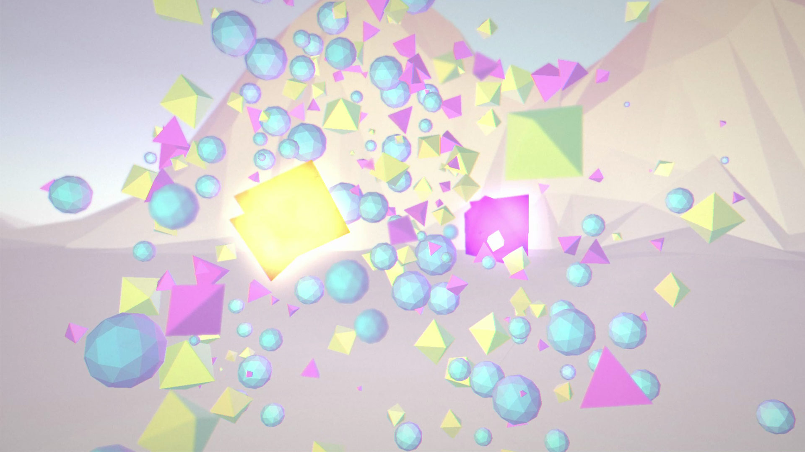

Finding Love
Active Theory
-

- 
- 
Experience Now
Description
Finding Love is a fully interactive, Virtual Reality story that transforms emotions into art. Moving through five distinct chapters, ones experiences a journey made from abstract visuals and sounds. In the story, the user’s avatar is a gem that is paired with another gem of a different color and shape.
When a user begins their experience they are matched to another user over a WebSocket connection to a matching server. When a match is made, the two users connect directly to each other over WebRTC and exchange information such as location and input data in order to see the other user’s motion reflected in the partner gem. At the end of the experience, the user learns that the other gem was another user sharing the experience at the same time and their approximate location is revealed.
The makers state “Our desire in this project, as well as many others, is to connect people in simple ways that make a meaningful impression. The other gem’s movements in the experience are directly impacted by the partner’s input whether desktop, mobile, or VR.”
Bio
Active Theory is a creative development production company based in Venice, California founded by Nick Mountford, Andy Thelander, and Michael Anthony. They have won numerous awards for work on such projects as Pottermore, Halo 5 Visualizer, Google Racer, and Coca Cola FIFA Shoot out. They are founded on web technology and believes screens of all shapes and sizes can be used to tell engaging, interactive stories. Their ideation process focuses on utilizing new technologies and techniques to connect people in meaningful ways.
Compatibility
| Chrome | Firefox | Safari | |
|---|---|---|---|
| Desktop | ✔ | ✔ | ✔ |
| Mobile | ✔ | ✔ | ✔ |
| Oculus | ✔ (Chromium) | ✔ (Nightly) | |
| Vive | ✔ (Chromium) | ✔ (Nightly) |
Note: You may need to do some special setup for your browser to work with a VR headset like the Oculus Rift or HTC Vive.